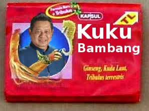

Anda merasa kurang ganteng? Susah dapat pasangan? Jangan cemas.. Saya beri jamu mujarab untuk Anda.
Sebelumnya saya minta maaf sama Pak SBY karena fotonya saya pakai sebagai contoh. Sama sekali saya gak bermaksud menghina. Lha wong Pak SBY saya samakan dengan Bima kok, ksatria Pandawa yang gagah berani.
Kembali pada topik kegantengan. Anda lihat pak SBY. Kalau kita perhatikan, tentu Pak SBY ini tidak seganteng Justin Timberlake, Justin Bieber, maupun Justin yang lain. Tapi… Banyak loh, ibu-ibu yang nge-fans sama beliau.
Nah, setelah saya perhatikan, ada beberapa hal yang membuat beliau terlihat good looking. Hal-hal ini yang bisa kita tiru untuk meningkatkan kegantengan kita.
1. Rambutnya klimis
Coba lihat rambut pak SBY. Selalu klimis dengan belahan pinggirnya. Kalau kita ingin meningkatkan kegantengan, rambut juga harus selalu rapi.
Gak harus ke salon mahal. Cukup ke potong rambut Madura saja dan memakai minyak rambut bila pdiperlukan. Rajin-rajin keramas, apalagi setelah aktifitas di luar ruangan.
2. Bajunya pantas dan rapi
Kalau orang Jawa bilang: “ajining raga gumantung ing busana“. Maksudnya kira-kira, keren atau tidaknya penampilan, tergantung dari pakaian.
Gak harus baju mahal, yang penting rapi. jangan malas nyetrika baju. Kalau gak punya setrika, pinjem sama temen. Kalau terlalu sibuk, bisa setrika ke laundry.
3. Badannya tegap, tidak loyo
Nah kalau yang ini, rahasianya cuma satu: olahraga. Jujur, saya sendiri juga agak malas-malasan. Makanya ingin sekali bisa lari pagi. Minimal seminggu sekali.
Olaraga bikin penampilan lebih fresh. Syukur-syukur fitnes. Kalau gak ya cukup pitnes (ngepit ngenes hehe..) alias bersepeda.
4. Wajah bersih dan segar
Rajin-rajinlah cuci muka. Kalau yang muslim, air wudhu bisa mencerahkan wajah. Di kampus, disekolah, atau kantor, kalau sekiranya wajah agak kusam, pergilah ke kamar mandi. Basuh wajah dengan air segar. Syukur-syukur pakai sabun muka.
5. Jaga image
Yang satu ini, konon Pak SBY jagonya.. hehe.
Bicara yang sopan. Gak harus dibuat-buat. Yang penting menghormati lawan bicara. Kalau orang lain bicara, didengarkan. Apalagi cewek curhat.. hehe.
Pikir baik-baik sebelum mengeluarkan kata. Jangan sampai menyakiti orang lain.
Itu dulu ya jamu mujarab ganteng kita. Kalau diterapkan, saya yakin tingkat kegantengan Anda akan meningkat.


{kind=link}
{kind=link}
{kind=link}
{kind=link}
{kind=link}
{kind=link}